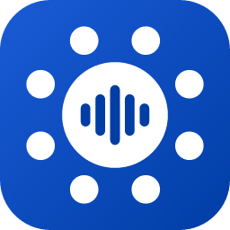

Politique de confidentialité — Tour de table
Dernière mise à jour : 25 octobre 2026
Tour de table est une application de transcription de rencontres qui fonctionne entièrement sur votre ordinateur. Cette politique explique quelles données l'application traite, où elles sont conservées et ce qui peut, ou non, quitter votre appareil.
En bref
- Aucun compte, aucune publicité, aucune télémétrie, aucun outil d'analyse.
- L'audio, les transcriptions, les ordres du jour et les comptes rendus restent sur votre ordinateur.
- L'éditeur de Tour de table ne reçoit, ne voit et ne conserve aucune de vos données.
Données traitées
| Donnée | Usage | Où elle est conservée |
|---|---|---|
| Son du micro et son de l'ordinateur (Teams, Zoom…) | Transcription, réécoute et découpage par point de l'ordre du jour | Fichier WAV dans le dossier de la rencontre, sur votre ordinateur |
| Transcriptions et titres des rencontres | Affichage, exports, comptes rendus | Dossier « Tour de table » de votre dossier Musique, sur votre ordinateur (une rencontre par dossier) |
| Enregistrements importés (MP4, M4A, MP3…) | Transcription | Lus sur place, jamais copiés ni envoyés |
| Ordres du jour déposés (Word, PDF, texte) | Guider la transcription, rédiger le compte rendu | Le texte extrait est enregistré avec la rencontre |
| Comptes rendus et résumés | Affichage et exports | Avec la rencontre |
| Paramètres (périphériques, mode de captation, lexique) | Fonctionnement de l'application | Dossier de l'application, sur votre ordinateur, avec les modèles et le journal |
Si votre dossier Musique est synchronisé par un service infonuagique (OneDrive, iCloud Drive…), ce service copie aussi vos rencontres, selon ses propres conditions. Tour de table, lui, n'envoie rien.
La reconnaissance vocale (Whisper) s'exécute sur votre processeur ou votre carte graphique. Aucun service infonuagique de transcription n'est utilisé.
Connexions réseau
La seule connexion Internet de Tour de table a lieu à l'installation des modèles :
- Téléchargement des modèles (reconnaissance vocale et rédaction), automatiquement au premier démarrage, puis seulement si un modèle manque (fichier effacé ou endommagé, mémoire vive du poste modifiée). Les fichiers proviennent de Hugging Face (
huggingface.coet ses serveurs de téléchargement enhf.co) : dépôt officiel de whisper.cpp et dépôts publics des modèles Qwen. Comme tout site Web, ces serveurs peuvent journaliser votre adresse IP. Aucune de vos données n'est transmise. Si les modèles ont été copiés à l'avance par votre service informatique, aucune connexion n'a lieu.
Les comptes rendus sont rédigés par le modèle intégré, sur votre ordinateur, sans aucune connexion.
L'application ne fait aucune autre connexion.
Conservation et suppression
Vos rencontres restent sur votre ordinateur jusqu'à ce que vous les supprimiez. Le bouton « Supprimer » déplace une rencontre dans le dossier « corbeille » de l'application, d'où vous pouvez la récupérer ou l'effacer définitivement. Désinstaller l'application supprime ses modèles, ses paramètres et sa corbeille (version du Microsoft Store), mais pas vos rencontres : elles restent dans Musique/Tour de table, où vous pouvez les effacer vous-même.
Votre responsabilité lors de l'enregistrement
Enregistrer ou transcrire une conversation peut être encadré par la loi, notamment au Québec par la Loi sur la protection des renseignements personnels dans le secteur privé et par la Loi sur l'accès aux documents des organismes publics et sur la protection des renseignements personnels. Informez les participants, y compris ceux à distance, et obtenez leur consentement avant d'enregistrer une rencontre.
Enfants
L'application ne s'adresse pas aux enfants et ne recueille sciemment aucune donnée les concernant.
Changements
Toute modification de cette politique sera publiée à cette adresse, avec sa date de mise à jour.
Nous joindre
Pour toute question : tourdetable.app@outlook.com